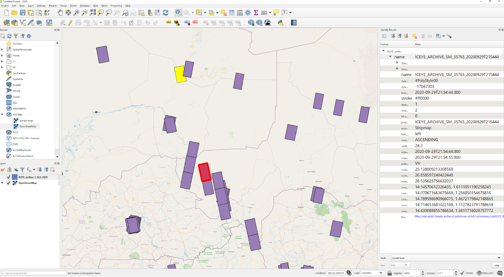

Ordering ICEYE Products
ICEYE offers timely and reliable global SAR imaging. This section describes the tasking process for new ICEYE collections and how to order archived imagery from ICEYE’s catalog. The type of SAR collections available to order are described in ICEYE Products.
ICEYE Tasking
To make things easier for our customers we have a simple tasking process for new images based on standard imaging configurations and simple time windows (Standard Orders). This provides you with the quickest and simplest way to order SAR imagery. More sophisticated requests can be placed using a Custom Order.
Standard Orders
ICEYE Tasking Standard Orders are based on the concept of acquisition time windows. When placing an order, you can specify a list of timing requirements that define one or more time windows in which the desired images should be acquired. This allows ICEYE to confirm that the images will be acquired during the specified time windows, without the need for you to review a preliminary feasibility study with exact acquisition times.
For existing customer, standard orders are submitted via email. To order, please fill out the Standard Order Form with your contact information, and be sure to specify all the required tasking options described in the paragraphs below. Once completed, please send your Standard Order Form and the optional AOI file to the COSP email address you were provided with during your account set up.
New customers should complete this form on the ICEYE website. There may be a slight delay while your account is set up but after that you will be able to order data using the instructions on this page.
Info
The order form will be provided by COSP. If you need a new one please contact the COSP team using the information that you were provided with when your account was set up or contact the sales team
The named recipients for that order will be notified via email once the order is received by the ICEYE Customer Operations and Satellite Planning (COSP) team.
Once received, your order will be ingested into the ICEYE's planning system which will determine if the order can be confirmed within the area of interest (AOI), and time windows that you have requested for the AOI.
- If the order can be fulfilled, you will be notified via email that your order has been accepted and the images will be scheduled for acquisition. Alternatives are provided if available.
- If the order cannot be fulfilled within the time constraints that you specified, you will be notified via email that your order cannot be completed.
Please note that standard orders require no final confirmation from you. If your order is accepted, the images will be acquired and delivered to you.
After an order is confirmed, ICEYE will make sure that your images are acquired, downlinked, processed, quality controlled and delivered to you. The exact acquisition times are determined by the acquisition time window that you chose when placing your order.
How to fill in a standard order form
When placing a Standard Order you will need to specify and/or select from the following options available in the Imagery Order Form :
-
AOI: The Area of Interest in the form of a latitude/longitude pair in the WGS 84 coordinate system. Alternatively, you can include a KML/KMZ, or geojson file as an attachment to your order.
-
Acquisition type: Select whether you want a
- Single acquisition of the specified AOI
- Stack of images of the same AOI over a time period
-
Timing information:
- Start and End time for the order: This is the time range in which the order is valid.
- Acquisition time windows: Choose a time window according to the precision that you require for each of the images that should be acquired.
- Basic: Each image is acquired within a 14-day time window from your specified order start time and repeat cycle. This time window is ideal for non-time-critical monitoring applications that do not require precise acquisition times.
- Pro: Each image is acquired within a 2-day time window from your specified order start time and repeat cycle. This is our base level service, commonly used in applications that do not depend on exact acquisition times or geometries.
- Exact: Each image is acquired within a 2-hour time window from your specified order start time and repeat cycle. This is our premium service, tailored for time-critical collections that do not require a precise imaging geometry. Note that for Exact time windows, you can optionally include an attachment with your desired exact acquisition times. This attachment can be the result of a feasibility study that you had previously requested or it can be generated directly by you using our published satellite ephemerides. Please see the section Optional Feasibility Studies below.
- Repeat cycle: This is the time between the start of consecutive acquisition time windows. This information is only required for orders of image stacks (repeat acquisitions).
-
Imaging Mode: Refer to Section Types of SAR Collection for more information on these imaging modes
- Strip
- Spot
- Spot Extended Area
- Scan
Feasibility Study as Part of a Standard Order
ICEYE customers can request a feasibility study at any time when considering placing a standard order request. Simply email the COSP team at the address your were given when your account was set up. You will need to provide an AOI, an imaging mode (or resolution), a time period and any possible additional instructions that you may require. The ICEYE Customer Operations and Satellite Planning Team will respond with a list of acquisition opportunities. Please note that Feasibility Studies are for informational purposes and do not reserve constellation capacity for the opportunities reported. The required constellation capacity to fulfill an order under the agreed time window is only reserved after ICEYE confirms an order. Please also note that feasibility studies are not required to place a standard order. You can eliminate the need for a feasibility study by accurately describing the time windows and other acquisition constraints that match your actual needs as part of your standard order.

Sometimes you might like to perform your own feasibility studies and we encourage this. We have made sure our satellite ephemeris information is publicly available at celestrak[^1] and n2yo.com[^2], and have provided step by step instructions on how to use the Swath Acquisition Viewer Software, SaVoir on the ICEYE website. Let us know how well this works for you.
Custom Orders
Custom Tasking orders offer a higher level of flexibility when specifying tasking requirements you desire. In general, any options that are not available as part of standard order can be requested as part of a custom order. Custom orders are initiated by submitting a Custom Order Form to the email address you received when your account was set up. Our tasking experts will study the feasibility of your request and will quote an acquisition plan for you to approve. New customers should contact the ICEYE sales team.
The following are examples of options that are currently available as part of a custom order:
- Mosaics : Coverage of large areas by acquiring multiple images
- Custom AOI coverage requirements : Each acquired image must cover at least a minimum percentage of the area of interest.
- Local time deviation limits : Images belonging to a stack or mosaic collection should be acquired within a certain local time range.
- Long image size requirements : Images that exceed the standard frame size of the requested imaging mode to cover the desired AOI. For example, long Strip acquisitions.
- Azimuth angle deviation limits for stacks or mosaics : Images belonging to a stack or mosaic collection should be acquired within a certain azimuth angle range.
- Custom acquisition time windows not available as standard tasking options : For example 72-hour, or 96-hour time windows for each acquisition.
Our tasking experts will be happy to try to accommodate any special tasking request that is required to meet your business needs.
Quality Control and Image Delivery
Automatic delivery
All acquisition SAR data initially goes though an automated quick Quality Control process in which we ensure that it covers the intended target location. The data is then automatically and immediately delivered to your folder in the ICEYE SFTP server. This gives you access to the SAR data without delay.
Quality Control
In addition to the automated quick Quality Control mentioned above, a detailed manual Quality Control is performed on all acquisition data. An ICEYE analyst will verify the acquired SAR Data conforms to the product specifications and that it does not contain any disqualifying ambiguities.
Redelivery (if required)
If defects are found during the detailed manual Quality Control steps, ICEYE will attempt to correct and redeliver the data to your SFTP folder as soon as possible. The most common type of defects that are detected and corrected in during Quality Control are geolocation inaccuracies. When performing Quality Control, sometimes ICEYE will have access to more refined satellite telemetry and orbit information that allows us to improve the geolocation accuracy. In such cases, the SAR data will be reprocessed to improve its geolocation accuracy and will be redelivered to you.
Delivery service level
Automatic delivery will be completed within 8 hours of the data being acquired. ICEYE will soon offer faster delivery times for customers that require near-real-time data. New customers receive instructions from the Customer Operations and Satellite Planning team on how to access your SFTP account. Through the SFTP server, you will have access to download all of your SAR data. You will receive a notification (via email) every time a new acquisition has passed our detailed Quality Control process and the final version of the data is ready for you to download using your SFTP account.
Info
Images are stored in your SFTP account for a period of 30 days.
Unforeseen Circumstances
In very rare situations, it might not be possible to acquire an image within the agreed time window. In this case, the Customer Operations and Satellite Planning team will immediately inform you and will propose an extended acquisition time window or allow you to cancel the collection.
ICEYE Archive Imagery
As an ICEYE customer, you have access to a complete catalog of archive imagery that is available for ordering. This catalog is updated on a regular basis on your SFTP account. The catalog is available in kmz and geojson formats and it includes low resolution image thumbnails so you can get a feel for the content of the image. The archive catalog can be viewed in Google Earth, QGIS or your favorite GIS where you can browse image locations, filter by time or different image metadata and perform advanced searches. Please note that imagery is included in the ICEYE Archive Catalog at least seven days after its acquisition time.

Archive imagery orders can be submitted via email. To place an order, please fill out either the Standard Order Form or the Custom Order Form with your contact information, and include a list of the product names for the scenes that you wish to purchase. An example of a product name that identifies an image scene is :
ICEYE_ARCHIVE_SM_10306_20190918T125047
Once an order is received, the ICEYE Customer Success team will deliver the requested images to you within 12 hours (assuming a realistic number of archive images. eg. less than 50). Please note that all orders for archive imagery require no final confirmation from you. The images that you request in your order will be delivered to you.
Please note that orders for archive imagery do not go through additional quality control. However, if you are not satisfied with the quality of an archive image that you have received, you can make use of our return policy described below.
Order Cancellation
In order to support your evolving business requirements, ICEYE supports a user-friendly order cancellation policy.
Cancellation of Tasking Orders
Standard Tasking orders confirmed by ICEYE can be cancelled free of charge up to 72 hours prior to the start of the acquisition time window.
Custom Tasking orders may be cancelled or rescheduled within twenty four (24) hours after order confirmation at no cost, as long as the order is submitted at least 72 hours before the proposed data collection time.
Cancellation policy conditions are presented in the table below.
| CANCELLATION REQUEST TIME (HOURS) | ADDITIONAL CONDITION | CANCELLATION CHARGE |
|---|---|---|
| Within 24 of order confirmation of a Custom Order | Order submitted >72h before the acquisition acquisition time window | Free of charge |
| More than 72h prior to the start of the acquisition time window | N/A | Free of charge |
| 72 - 48h prior to the start of the acquisition time window | N/A | 10% of the image value |
| 48 - 24h prior to the start of the acquisition time window | N/A | 20% of the image value |
| Less than 24h prior to the start of the acquisition time window | Order submitted >24h before the start of the acquisition time window | 100% of the image value |
Return Policy
If you are not satisfied with your purchase, please contact our Customer Operations and Satellite Planning team at customer@iceye.com within 30 days of receiving your order. Your satisfaction is our priority, so we will work quickly to resolve your concerns.
Invoicing
ICEYE users can pay for imaging in a range of different ways in order to be as flexible as possible:
- Prepayment : In this option a number of images can be paid for up-front. When the prepayment has been paid, you can place orders and receive the amount of data up to your prepaid quota. This is designed for customers that know that they would like to purchase a number of images and offers imagery at a reduced rate.
- Net 30 : This is designed for larger or industrial customers wishing to purchase imagery in volume. In this case we will discuss your needs and enter into a contract with you. Images can then be tasked as and when you see fit and we will invoice you monthly. Payment then has to be made within 30 days of sending you the invoice.
ICEYE Finance will send invoices during the first week of the month for all the products delivered to you within the previous month. The monthly invoice will not include the products that have been ordered but have not yet been delivered to you. If no products have been shipped to you during the previous month, invoice will not be extended.